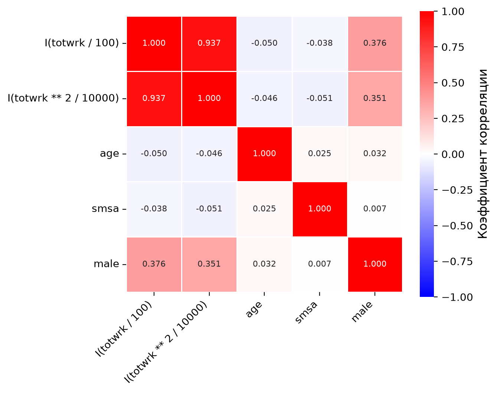
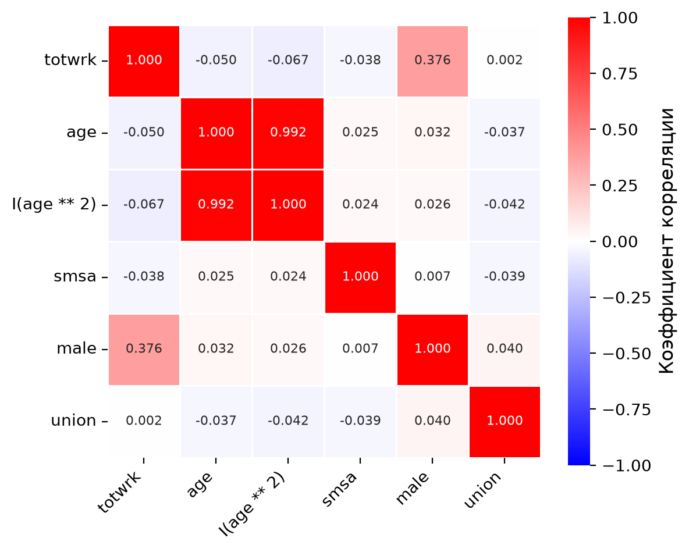
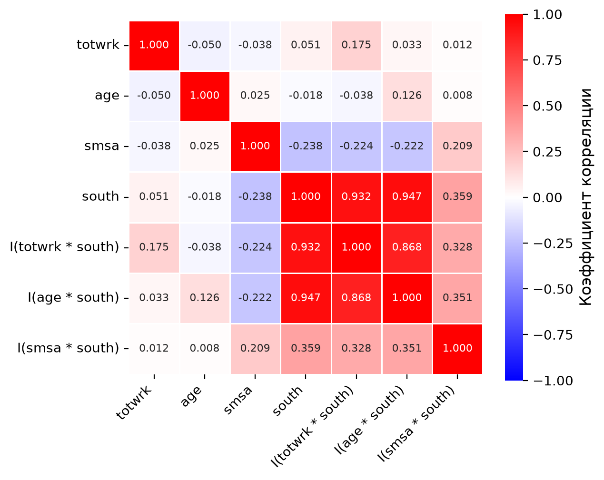
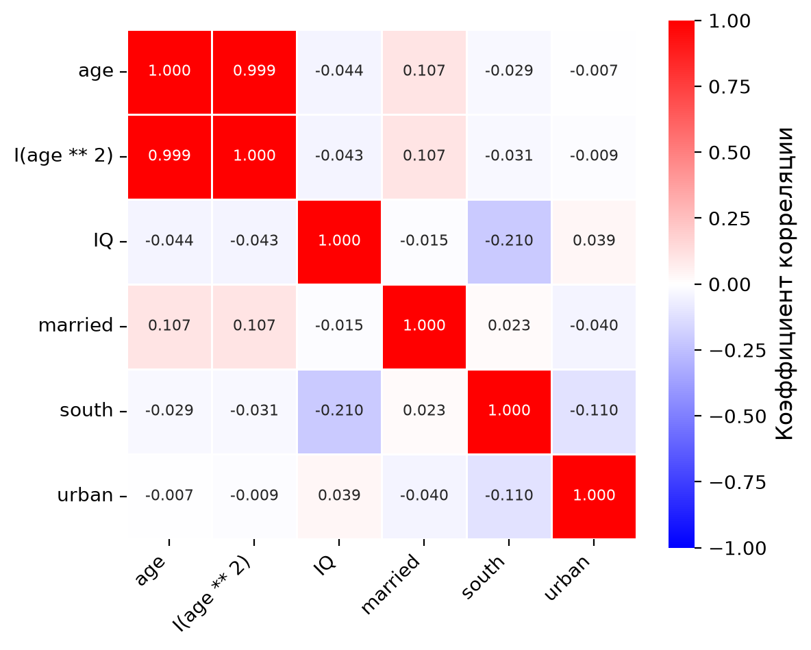
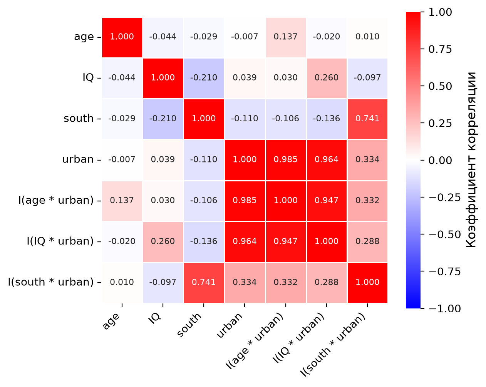

Модель была подогнана по 706 наблюдениям.
Задачи по Эконометрике-1: Мультиколлинеарность
Важное уведомлениеВажно
- Логарифм натуральный; константа включается в модель по умолчанию.
- Данные — в папке
datasets/, описание переменных — вdatasets/data-description.md. - VIF и критические значения округляются до 2-х десятичных знаков, остальные ответы — до 3-х. Ответы считаются по неокруглённым оценкам.
- Коэффициенты подписаны как в statsmodels:
Intercept— константа,np.log(x)— \(\log x\),I(x ** 2)— \(x^2\),I(x * d)— произведение \(x\cdot d\). - Все тесты в этом листке — с неробастными стандартными ошибками; критические значения и P-значения — по t- и F-распределениям.
1 Мультиколлинеарность: VIF, t-тест и F-тест
1.1 sleep equation #1
Для набора данных sleep75 рассмотрим регрессию
sleep ~ I(totwrk/100) + I(totwrk**2/10000) + age + smsa + male
Переменные sleep (сон) и totwrk (занятость) измерены в минутах в неделю, age — в годах; smsa, male, union, south — бинарные переменные.
Вычислите показатели VIF для регрессоров. Ответ округлите до 2-х десятичных знаков.
| Переменная | VIF |
|---|---|
| I(totwrk / 100) | 8.37 |
| I(totwrk ** 2 / 10000) | 8.20 |
| age | 1.01 |
| smsa | 1.00 |
| male | 1.17 |
Вычислите корреляционную матрицу регрессоров. Ответ округлите до 3-х десятичных знаков.
| I(totwrk / 100) | I(totwrk ** 2 / 10000) | age | smsa | male | |
|---|---|---|---|---|---|
| I(totwrk / 100) | 1.000 | 0.937 | -0.050 | -0.038 | 0.376 |
| I(totwrk ** 2 / 10000) | 0.937 | 1.000 | -0.046 | -0.051 | 0.351 |
| age | -0.050 | -0.046 | 1.000 | 0.025 | 0.032 |
| smsa | -0.038 | -0.051 | 0.025 | 1.000 | 0.007 |
| male | 0.376 | 0.351 | 0.032 | 0.007 | 1.000 |
Постройте тепловую карту корреляционной матрицы (Рисунок 1).

Важное уведомлениеУсловия теста
- уровень значимости: 5%
- стандартные ошибки: неробастные
- гипотеза 1: t-тест, значимость каждого коэффициента: \(H_0:\beta_j=0\)
- гипотеза 2: F-тест, значимость влияния занятости: \(H_0:\beta_{totwrk/100}=\beta_{totwrk^2/10000}=0\)
Какие коэффициенты значимы?
Результаты \(t\)-теста для коэффициентов (неробастные стандартные ошибки):
| Coef. | Std.Err. | t-value | p-value | Signif. | |
|---|---|---|---|---|---|
| Intercept | 3428.805 | 76.655 | 44.730 | <0.001 | |
| I(totwrk / 100) | -8.195 | 4.789 | -1.711 | 0.088 | * |
| I(totwrk ** 2 / 10000) | -0.214 | 0.111 | -1.930 | 0.054 | * |
| age | 2.817 | 1.387 | 2.031 | 0.043 | ** |
| smsa | -78.049 | 32.072 | -2.434 | 0.015 | ** |
| male | 86.639 | 34.200 | 2.533 | 0.012 | ** |
Signif. codes: *** \(p<0.01\), ** \(p<0.05\), * \(p<0.1\)
УведомлениеКоэффициенты, значимые на уровне 5% (по неробастным стандартным ошибкам)
age, smsa, male
Проверим гипотезу о значимости влияния занятости.
Результаты \(F\)-теста (неробастные стандартные ошибки):
| F | df1 | df2 | p-value |
|---|---|---|---|
| 45.619 | 2 | 700 | <0.001 |
Вычислите критическое значение. Ответ округлите до 2-х десятичных знаков.
УведомлениеКритическое значение
\(F_{crit} = 3.01\)
Какой можно сделать вывод?
СоветВывод
\(F = 45.619 > 3.01\), гипотеза \(H_0\) отвергается.
На первый взгляд противоречие: коэффициенты при I(totwrk / 100) и I(totwrk ** 2 / 10000) по отдельности незначимы (P-значения 0.088 и 0.054), а гипотеза об их совместной незначимости отвергается. Оно объясняется мультиколлинеарностью: корреляция двух регрессоров равна 0.937, VIF — 8.37 и 8.20.
1.2 sleep equation #2
Для набора данных sleep75 рассмотрим регрессию
sleep ~ totwrk + age + I(age**2) + smsa + male + union
Модель была подогнана по 706 наблюдениям.
Вычислите показатели VIF для регрессоров. Ответ округлите до 2-х десятичных знаков.
| Переменная | VIF |
|---|---|
| totwrk | 1.20 |
| age | 65.40 |
| I(age ** 2) | 65.56 |
| smsa | 1.00 |
| male | 1.17 |
| union | 1.01 |
Вычислите корреляционную матрицу регрессоров. Ответ округлите до 3-х десятичных знаков.
| totwrk | age | I(age ** 2) | smsa | male | union | |
|---|---|---|---|---|---|---|
| totwrk | 1.000 | -0.050 | -0.067 | -0.038 | 0.376 | 0.002 |
| age | -0.050 | 1.000 | 0.992 | 0.025 | 0.032 | -0.037 |
| I(age ** 2) | -0.067 | 0.992 | 1.000 | 0.024 | 0.026 | -0.042 |
| smsa | -0.038 | 0.025 | 0.024 | 1.000 | 0.007 | -0.039 |
| male | 0.376 | 0.032 | 0.026 | 0.007 | 1.000 | 0.040 |
| union | 0.002 | -0.037 | -0.042 | -0.039 | 0.040 | 1.000 |
Постройте тепловую карту корреляционной матрицы (Рисунок 2).

Важное уведомлениеУсловия теста
- уровень значимости: 5% и 10%
- стандартные ошибки: неробастные
- гипотеза 1: t-тест, значимость каждого коэффициента: \(H_0:\beta_j=0\)
- гипотеза 2: F-тест, значимость влияния возраста: \(H_0:\beta_{age}=\beta_{age^2}=0\)
Какие коэффициенты значимы на каждом из двух уровней?
Результаты \(t\)-теста для коэффициентов (неробастные стандартные ошибки):
| Coef. | Std.Err. | t-value | p-value | Signif. | |
|---|---|---|---|---|---|
| Intercept | 3688.551 | 218.389 | 16.890 | <0.001 | |
| totwrk | -0.165 | 0.018 | -9.105 | <0.001 | *** |
| age | -7.734 | 11.213 | -0.690 | 0.491 | |
| I(age ** 2) | 0.127 | 0.134 | 0.948 | 0.343 | |
| smsa | -74.527 | 32.156 | -2.318 | 0.021 | ** |
| male | 86.321 | 34.329 | 2.515 | 0.012 | ** |
| union | 8.574 | 38.195 | 0.224 | 0.822 |
Signif. codes: *** \(p<0.01\), ** \(p<0.05\), * \(p<0.1\)
УведомлениеЗначимые коэффициенты (по неробастным стандартным ошибкам)
- на уровне 5%:
totwrk,smsa,male - на уровне 10%:
totwrk,smsa,male
Проверим гипотезу о значимости влияния возраста.
Результаты \(F\)-теста (неробастные стандартные ошибки):
| F | df1 | df2 | p-value |
|---|---|---|---|
| 2.497 | 2 | 699 | 0.083 |
Вычислите критические значения для двух уровней значимости. Ответ округлите до 2-х десятичных знаков.
УведомлениеКритические значения
- уровень значимости 5%: \(F_{crit} = 3.01\)
- уровень значимости 10%: \(F_{crit} = 2.31\)
Какой можно сделать вывод на каждом из двух уровней?
СоветВывод
- На уровне 5%: \(F = 2.497 < 3.01\), гипотеза \(H_0\) не отвергается. Противоречия нет: коэффициенты при
ageиI(age ** 2)незначимы по отдельности (P-значения 0.491 и 0.343), и гипотеза об их совместной незначимости тоже не отвергается. - На уровне 10%: \(F = 2.497 > 2.31\), гипотеза \(H_0\) отвергается, хотя коэффициенты при
ageиI(age ** 2)по отдельности незначимы. На первый взгляд противоречие. Оно объясняется мультиколлинеарностью: корреляцияageиI(age ** 2)равна 0.992, VIF — 65.40 и 65.56.
1.3 sleep equation #3
Для набора данных sleep75 рассмотрим регрессию
sleep ~ totwrk + age + smsa + south +
I(totwrk*south) + I(age*south) + I(smsa*south)Модель была подогнана по 706 наблюдениям.
Вычислите показатели VIF для регрессоров. Ответ округлите до 2-х десятичных знаков.
| Переменная | VIF |
|---|---|
| totwrk | 1.15 |
| age | 1.25 |
| smsa | 1.19 |
| south | 22.00 |
| I(totwrk * south) | 8.85 |
| I(age * south) | 12.28 |
| I(smsa * south) | 1.29 |
Вычислите корреляционную матрицу регрессоров. Ответ округлите до 3-х десятичных знаков.
| totwrk | age | smsa | south | I(totwrk * south) | I(age * south) | I(smsa * south) | |
|---|---|---|---|---|---|---|---|
| totwrk | 1.000 | -0.050 | -0.038 | 0.051 | 0.175 | 0.033 | 0.012 |
| age | -0.050 | 1.000 | 0.025 | -0.018 | -0.038 | 0.126 | 0.008 |
| smsa | -0.038 | 0.025 | 1.000 | -0.238 | -0.224 | -0.222 | 0.209 |
| south | 0.051 | -0.018 | -0.238 | 1.000 | 0.932 | 0.947 | 0.359 |
| I(totwrk * south) | 0.175 | -0.038 | -0.224 | 0.932 | 1.000 | 0.868 | 0.328 |
| I(age * south) | 0.033 | 0.126 | -0.222 | 0.947 | 0.868 | 1.000 | 0.351 |
| I(smsa * south) | 0.012 | 0.008 | 0.209 | 0.359 | 0.328 | 0.351 | 1.000 |
Постройте тепловую карту корреляционной матрицы (Рисунок 3).

Важное уведомлениеУсловия теста
- уровень значимости: 5%
- стандартные ошибки: неробастные
- гипотеза 1: t-тест, значимость каждого коэффициента: \(H_0:\beta_j=0\)
- гипотеза 2: F-тест, значимость региона (переменная
south): \(H_0:\beta_{south}=\beta_{totwrk\cdot south}=\beta_{age\cdot south}=\beta_{smsa\cdot south}=0\)
Какие коэффициенты значимы?
Результаты \(t\)-теста для коэффициентов (неробастные стандартные ошибки):
| Coef. | Std.Err. | t-value | p-value | Signif. | |
|---|---|---|---|---|---|
| Intercept | 3557.513 | 75.504 | 47.117 | <0.001 | |
| totwrk | -0.161 | 0.018 | -9.062 | <0.001 | *** |
| age | 1.485 | 1.545 | 0.961 | 0.337 | |
| smsa | -61.554 | 34.856 | -1.766 | 0.078 | * |
| south | -407.206 | 189.627 | -2.147 | 0.032 | ** |
| I(totwrk * south) | 0.078 | 0.050 | 1.556 | 0.120 | |
| I(age * south) | 8.267 | 3.495 | 2.365 | 0.018 | ** |
| I(smsa * south) | 49.429 | 107.111 | 0.461 | 0.645 |
Signif. codes: *** \(p<0.01\), ** \(p<0.05\), * \(p<0.1\)
УведомлениеКоэффициенты, значимые на уровне 5% (по неробастным стандартным ошибкам)
totwrk, south, I(age * south)
Проверим гипотезу о значимости региона.
Результаты \(F\)-теста (неробастные стандартные ошибки):
| F | df1 | df2 | p-value |
|---|---|---|---|
| 3.144 | 4 | 698 | 0.014 |
Вычислите критическое значение. Ответ округлите до 2-х десятичных знаков.
УведомлениеКритическое значение
\(F_{crit} = 2.38\)
Какой можно сделать вывод?
СоветВывод
\(F = 3.144 > 2.38\), гипотеза \(H_0\) отвергается.
Здесь противоречия нет: коэффициенты при south и I(age * south) значимы и по отдельности (P-значения 0.032 и 0.018), а F-тест отвергает совместную незначимость всех четырёх. При этом VIF у south равен 22.00, у I(age * south) — 12.28: высокий VIF увеличивает стандартные ошибки, но сам по себе не делает коэффициент незначимым.
1.4 wage equation #1
Для набора данных wage2 рассмотрим регрессию
np.log(wage) ~ age + I(age**2) + IQ + married + south + urban
Переменная wage — месячный заработок, age — возраст в годах, IQ — результат теста IQ; married, south, urban — бинарные переменные.
Модель была подогнана по 935 наблюдениям.
Вычислите показатели VIF для регрессоров. Ответ округлите до 2-х десятичных знаков.
| Переменная | VIF |
|---|---|
| age | 632.87 |
| I(age ** 2) | 632.96 |
| IQ | 1.05 |
| married | 1.01 |
| south | 1.06 |
| urban | 1.02 |
Вычислите корреляционную матрицу регрессоров. Ответ округлите до 3-х десятичных знаков.
| age | I(age ** 2) | IQ | married | south | urban | |
|---|---|---|---|---|---|---|
| age | 1.000 | 0.999 | -0.044 | 0.107 | -0.029 | -0.007 |
| I(age ** 2) | 0.999 | 1.000 | -0.043 | 0.107 | -0.031 | -0.009 |
| IQ | -0.044 | -0.043 | 1.000 | -0.015 | -0.210 | 0.039 |
| married | 0.107 | 0.107 | -0.015 | 1.000 | 0.023 | -0.040 |
| south | -0.029 | -0.031 | -0.210 | 0.023 | 1.000 | -0.110 |
| urban | -0.007 | -0.009 | 0.039 | -0.040 | -0.110 | 1.000 |
Постройте тепловую карту корреляционной матрицы (Рисунок 4).

Важное уведомлениеУсловия теста
- уровень значимости: 5%
- стандартные ошибки: неробастные
- гипотеза 1: t-тест, значимость каждого коэффициента: \(H_0:\beta_j=0\)
- гипотеза 2: F-тест, значимость влияния возраста: \(H_0:\beta_{age}=\beta_{age^2}=0\)
Какие коэффициенты значимы?
Результаты \(t\)-теста для коэффициентов (неробастные стандартные ошибки):
| Coef. | Std.Err. | t-value | p-value | Signif. | |
|---|---|---|---|---|---|
| Intercept | 2.938 | 1.656 | 1.774 | 0.076 | |
| age | 0.145 | 0.100 | 1.447 | 0.148 | |
| I(age ** 2) | -0.002 | 0.002 | -1.236 | 0.217 | |
| IQ | 0.008 | 0.001 | 9.770 | <0.001 | *** |
| married | 0.202 | 0.040 | 5.008 | <0.001 | *** |
| south | -0.100 | 0.027 | -3.736 | <0.001 | *** |
| urban | 0.173 | 0.028 | 6.260 | <0.001 | *** |
Signif. codes: *** \(p<0.01\), ** \(p<0.05\), * \(p<0.1\)
УведомлениеКоэффициенты, значимые на уровне 5% (по неробастным стандартным ошибкам)
IQ, married, south, urban
Проверим гипотезу о значимости влияния возраста.
Результаты \(F\)-теста (неробастные стандартные ошибки):
| F | df1 | df2 | p-value |
|---|---|---|---|
| 14.833 | 2 | 928 | <0.001 |
Вычислите критическое значение. Ответ округлите до 2-х десятичных знаков.
УведомлениеКритическое значение
\(F_{crit} = 3.01\)
Какой можно сделать вывод?
СоветВывод
\(F = 14.833 > 3.01\), гипотеза \(H_0\) отвергается.
На первый взгляд противоречие: коэффициенты при age и I(age ** 2) по отдельности незначимы (P-значения 0.148 и 0.217), а гипотеза об их совместной незначимости отвергается. Оно объясняется мультиколлинеарностью: корреляция age и I(age ** 2) равна 0.999, VIF — 632.87 и 632.96.
1.5 wage equation #2
Для набора данных wage2 рассмотрим регрессию
np.log(wage) ~ age + IQ + south + urban +
I(age*urban) + I(IQ*urban) + I(south*urban)Модель была подогнана по 935 наблюдениям.
Вычислите показатели VIF для регрессоров. Ответ округлите до 2-х десятичных знаков.
| Переменная | VIF |
|---|---|
| age | 3.39 |
| IQ | 3.88 |
| south | 3.83 |
| urban | 175.88 |
| I(age * urban) | 114.32 |
| I(IQ * urban) | 53.14 |
| I(south * urban) | 4.09 |
Вычислите корреляционную матрицу регрессоров. Ответ округлите до 3-х десятичных знаков.
| age | IQ | south | urban | I(age * urban) | I(IQ * urban) | I(south * urban) | |
|---|---|---|---|---|---|---|---|
| age | 1.000 | -0.044 | -0.029 | -0.007 | 0.137 | -0.020 | 0.010 |
| IQ | -0.044 | 1.000 | -0.210 | 0.039 | 0.030 | 0.260 | -0.097 |
| south | -0.029 | -0.210 | 1.000 | -0.110 | -0.106 | -0.136 | 0.741 |
| urban | -0.007 | 0.039 | -0.110 | 1.000 | 0.985 | 0.964 | 0.334 |
| I(age * urban) | 0.137 | 0.030 | -0.106 | 0.985 | 1.000 | 0.947 | 0.332 |
| I(IQ * urban) | -0.020 | 0.260 | -0.136 | 0.964 | 0.947 | 1.000 | 0.288 |
| I(south * urban) | 0.010 | -0.097 | 0.741 | 0.334 | 0.332 | 0.288 | 1.000 |
Постройте тепловую карту корреляционной матрицы (Рисунок 5).

Важное уведомлениеУсловия теста
- уровень значимости: 1%
- стандартные ошибки: неробастные
- гипотеза 1: t-тест, значимость каждого коэффициента: \(H_0:\beta_j=0\)
- гипотеза 2: F-тест, значимость влияния места жительства (переменная
urban): \(H_0:\beta_{urban}=\beta_{age\cdot urban}=\beta_{IQ\cdot urban}=\beta_{south\cdot urban}=0\)
Какие коэффициенты значимы?
Результаты \(t\)-теста для коэффициентов (неробастные стандартные ошибки):
| Coef. | Std.Err. | t-value | p-value | Signif. | |
|---|---|---|---|---|---|
| Intercept | 4.999 | 0.312 | 16.016 | <0.001 | |
| age | 0.024 | 0.007 | 3.294 | 0.001 | *** |
| IQ | 0.008 | 0.002 | 5.116 | <0.001 | *** |
| south | -0.014 | 0.052 | -0.271 | 0.787 | |
| urban | 0.237 | 0.368 | 0.643 | 0.520 | |
| I(age * urban) | -0.001 | 0.009 | -0.069 | 0.945 | |
| I(IQ * urban) | -1.41e-05 | 0.002 | -0.007 | 0.994 | |
| I(south * urban) | -0.117 | 0.061 | -1.924 | 0.055 | * |
Signif. codes: *** \(p<0.01\), ** \(p<0.05\), * \(p<0.1\)
УведомлениеКоэффициенты, значимые на уровне 1% (по неробастным стандартным ошибкам)
age, IQ
Проверим гипотезу о значимости влияния места жительства.
Результаты \(F\)-теста (неробастные стандартные ошибки):
| F | df1 | df2 | p-value |
|---|---|---|---|
| 10.250 | 4 | 927 | <0.001 |
Вычислите критическое значение. Ответ округлите до 2-х десятичных знаков.
УведомлениеКритическое значение
\(F_{crit} = 3.34\)
Какой можно сделать вывод?
СоветВывод
\(F = 10.250 > 3.34\), гипотеза \(H_0\) отвергается.
На первый взгляд противоречие: коэффициент при urban и все три коэффициента при взаимодействиях с urban по отдельности незначимы на уровне 1% (P-значения от 0.055 до 0.994), а гипотеза об их совместной незначимости отвергается. Оно объясняется мультиколлинеарностью: корреляции urban с I(age * urban) и I(IQ * urban) равны 0.985 и 0.964, VIF этих трёх регрессоров — 175.88, 114.32 и 53.14.